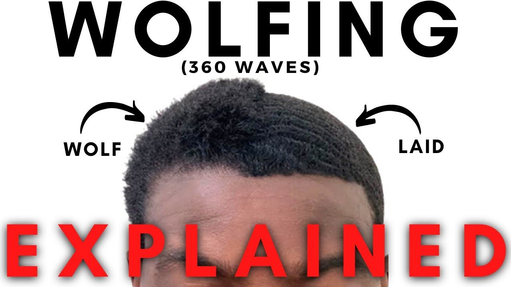

720 Waves: The Full-Spin Pattern and the Wolf It Demands
If the 540 is a level up, the 720 is the final boss: the pattern winds two full rotations around the head, with the sides brushing almost vertically and the whole head reading like a whirlpool. Very few wavers ever complete the transition, and the reason is not talent — it is the wolf. A 720 is built on months of growth, because the pattern needs length to express the spin. PhdInWaves (@Phdinwaves) breaks down the science of wolfing in the video below; this guide maps the 720 on top of that foundation.
The geometry of the full spin
In a 720, the side sections brush steeply — closer to straight down-and-around than forward — so the wave direction wraps the head twice. The crown sits as the vortex centre, and the back often develops a beehive-style swirl where the rotations resolve. From above, a finished 720 genuinely looks like water circling a drain.
Because the geometry is so different, most 720 wavers start the pattern from a fresh cut rather than converting trained 360s. Converting means un-training one set of directions while training another, at length, under compression, for months. A fresh start on a planned cut is honestly the faster road.
The wolf is the program
720 training runs on extended wolfing — eight, ten, sometimes twelve weeks of growth between cuts, with line-ups only to stay presentable. The length is not vanity: short hair physically cannot show two rotations. Every week of the wolf, your brushing stays in the steep diagonal directions, and your compression never takes a night off, because long hair under a loose tie tangles into the pattern's worst enemy.
Products shift during a long wolf, too — heavier moisture to keep length pliable, and regular wash-and-style resets to keep the scalp healthy under all that hair. The wolfing science in the video below covers why the growth phase builds the pattern rather than just delaying the cut.
Who should attempt it
Attempt the 720 if you have already held a connected pattern for a year or more, your crown control is excellent, and you genuinely enjoy the process — because this pattern is process, for the better part of a year. Attempt it knowing most people who start one do not finish; the finishers are simply the ones who kept brushing.
Everyone else: admire it, steal its discipline, and know that a perfect 360 maintained for years commands more respect in most rooms than an abandoned 720. The pattern hierarchy is real, but consistency outranks ambition every time.
Watch: wolfing explained by PhdInWaves — the long wolf is the engine the 720 is built on
Video: “Wolfing 360 Waves EXPLAINED | Benefits + Science of Wolfing” by PhdInWaves (@Phdinwaves) · Watch on YouTube
Shop the gear
Everything in this guide runs on the right gear: a durag that holds compression without slipping, a cap that stays put, and fabric that treats your hair right. The durag.store launch lineup is built to that standard — dual-layer construction, long tails, and stitching made to survive the routine. Join the launch list and use code GOLDSTANDARD for 15% off your first order.
Keep learning
- How to Get 360 Waves: The Complete Beginner Roadmap — Basic · Wave Training
- Waves in One Day: The Wash Method for Instant Definition — Basic · Wave Training
- 540 Waves: The Diagonal Pattern for Wavers Ready to Level Up — Extreme · Wave Training
Sources: Video — “Wolfing 360 Waves EXPLAINED | Benefits + Science of Wolfing” by PhdInWaves (@Phdinwaves), youtube.com. Guide written by the durag.store Wave Lab.